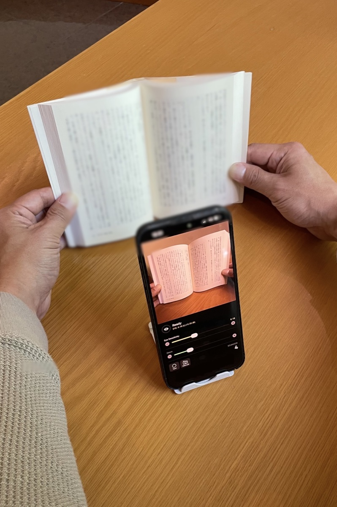

両手で本を押さえたまま、
まばたきで連続スキャン。
分厚い専門書・参考書・ノートを電子化して Gemini Notebook や ChatGPT / Claude に取り込みたいのに、両手でページを押さえるとシャッターが押せない——。
PachiSCA（パチスカ） は、画面タップ一切不要。0.4秒目を閉じるだけでパシャッと撮影できる、完全無料のハンズフリースキャンカメラです。

本を傷つけず、生成AIへ最速で取り込む3ステップ
裁断機も専用スキャナーも不要。スマホスタンド1つで、紙の書籍やノートをAIの知識ソースへ変換できます。
両手で本を押さえて「まばたき連写」
スマホをスタンドに置き、両手でページをしっかり開いて押さえます。「ページをめくる ➔ 0.4秒目を閉じる」の繰り返しだけで、専用アルバム PachiSCA Scan に次々と保存されます。
60ページでも数秒で1つのPDFに結合
姉妹アプリ SCAtoPDF（無料）を開き、PachiSCA Scan アルバムの写真を選択してボタンを1回タップするだけ。順番並べ替え・ファイル名指定もワンタップ。
Gemini NotebookやChatGPTへ投入
完成したPDFを Gemini Notebook・ChatGPT・Claude にそのままアップロード。専門書の要約、試験問題の作成、資料横断検索がすぐに行えます。
実用性を追求した5つの設計
1. 自然なまばたきでは誤爆しない「0.4秒ホールド判定」
Apple Visionフレームワークで左右の目の開閉度（EAR値）を毎秒20回解析。無意識の瞬き（0.1〜0.2秒）をスルーし、意識的に0.4秒閉じたときだけシャッターを切ります。
2. 目の感度スライダー ＆ 写真保存なしの「テストモード」
スタンドの角度や照明に合わせて感度スライダーを直感調整。「テストモード」をONにすれば、カメラロールを汚さずにシャッター反応だけを事前チェックできます。
3. 専用アルバム「PachiSCA Scan」への自動振り分け
撮影した本のページは自動的に専用アルバムへ整理されるため、プライベートな写真と混ざりません。
4. 1.0x〜5.0x ズーム ＆ 左右パネル切替
スタンドの高さに合わせたズーム調整や、横画面時の操作パネル左右入れ替えに対応。
5. 100% オンデバイス処理でプライバシー完全保護
インカメラの映像や顔の特徴点データは端末メモリ上でのみリアルタイム判定に使われ、保存・外部送信は一切行われません。
よくある質問 (FAQ)
Q. まばたきの感度調整はどうすればいいですか？
画面中央にリアルタイム表示される EYE: 0.19 (L) / 0.20 (R) の数値を見ながら、目を閉じたときの値より少し上に「Eye Sensitivity」スライダーを合わせてください。左下の「Test」ボタンを押せば写真を保存せずに何度でも練習できます。
Q. どんなスマホスタンドを使えばいいですか？
100円ショップや市販の一般的な卓上スマホスタンド、またはグースネック（アーム）スタンドでOKです。背面カメラに本が映り、前面カメラにあなたの顔が映る角度に置けば準備完了です。
Q. なぜ「電子化して生成AIに取り込む」のに向いているのですか？
Gemini NotebookやChatGPT、Claudeは、多少の湾曲や指が映り込んだページ写真でも極めて高いOCR精度でテキストを読み取れます。そのため「綺麗に裁断スキャンする」必要がなく、PachiSCAで両手で開いてパシャパシャ撮ってPDF化するだけで実用十分なAI知識ベースが作れます。
Q. 料金はかかりますか？
PachiSCA、およびPDF結合アプリSCAtoPDFともに完全無料（アプリ内課金なし・バナー広告のみ）で全機能をお使いいただけます。
あなたの本棚を、今日から生成AIの知識に。
両手で本を押さえたまま、まばたきでパシャッ。新しいハンズフリー電子化体験を今すぐ無料でお試しください。